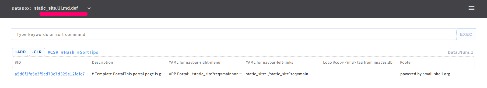
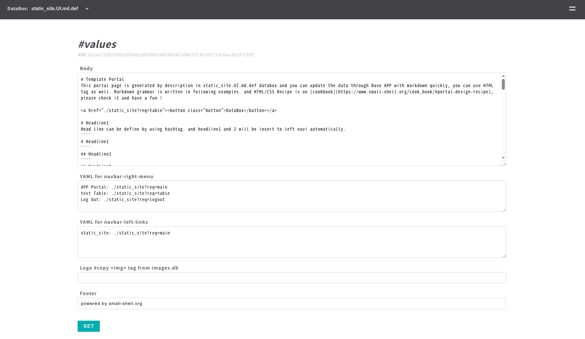
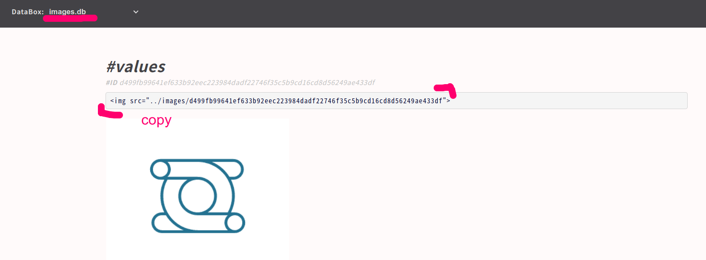

Cook book
In this page, you can learn how to update main page of Custom App and how to utilize add-on tools.
Cook Custom App
Once Custom App is generated by "gen" command, You can edit main page by 2 way. 1 is edit the page on Base App {$app_UI.md.def} like following.

You can use both markdown and HTML. please check the markdown grammer here. also you can update "menu" "logo" and "footer" on the same admin page.

| Field | Language | Description |
|---|---|---|
| Body | Markdown or HTML | Main contents of main page, you can use both HTML and Markdown |
| YAML for navbar-right-header | YAML | Define links in even button menu of navbar right side, If you delete contents of this field, right side menu will be disapeared |
| YAML for navbar-left-links | YAML | Define links of navbar left side |
| Logo | HTML | Insert logo to the main page |
| Footer | Text | Define footer |
Insert image
You can upload logo or images to images.db. and then you can get link of img tag that can be utilized on body or logo field on $app.UI.md.def page.

Use calendar
if you write down %%calendar in "Body", you can insert calendar to the Custom App. calendar events will be saved on $app.events databox that will be generated automatically when you create Custom App.
HTML/CSS Grammar
Another way of updating main page is just editting hml.def directly {$app_main.html.def}
sudo vi /var/www/def/static_site_main.html.def
Note
Please update under "main" class, then you can use light css framework
Update left header
You can modify links and logo to the left header, in this example link to Docs is added.
! please upload image file to /var/www/html
<div class="left-header">
<a href="https://github.com"><img src="../GitHub-Mark-32px.png"></a>
<a href="https://small-shell.org"><h2>Docs</h2></a>
</div>
Implement flex-table
For implementing table, you must use some classes. table must be contain "flext-table" class. and header should have "flex-table-header" class.
<div class="flex-table">
<ul>
<li class="flex-table-header">
<p>column1</p>
<p>column2</p>
<p>column3</p>
<p>column4</p>
</li>
<li>
<p>data1.column1</p>
<p>data1.column2</p>
<p>data1.column3</p>
<p>data1.column4</p>
</li>
</ul>
</div>
Add internal page link to the left navi
In this example, page will have 3 section including table section.
<div class="left-nav">
<a href="#section1"><p>section1</p></a>
<a href="#section2"><p>section2</p></a>
<a href="#section3><p>section3p></a>
</div>
Use button
Button must have "button" class.
<button class="button">Sample button</button>
Use image
In this example, we would like to use GitHub logo for image. please upload logo to "/var/www/html" that's static site dir. then write down the path to the HTML page.
<a href="https://github.com"><img src="../GitHub-Mark-32px.png"></a>
Update even menu
In this example, links in right header menu will be external links and mail addr.
sudo vi /var/www/def/common_parts/static_site_common_menu
<li><a href="">LINK 1</a></li>
<li><a href="">LINK 2</a></li>
<li><a href="mailto:address">MAIL</a></li>
or If you don't need to use right header, just delete right header definition on $app_main.html.def
sudo vi /var/www/def/static_site_main.html.def
right header definition on main.html.def
<div class="right-header">
<button class="even-btn-menu">=</button>
<nav>
<ul>
%%common_menu
</ul>
</nav>
</div>
Add footer
Please use footer class for making footer.
<div class="footer">
<p>powered by small-shell.org</p>
</div>
Implement form
If you want to implement form, it's recommended to use class="app-form" , please check following example.
<div class="app-form">
<h1>#new</h1>
<form method="post" action="" onclick="document.charset='utf-8';">
<ul>
<li>
<label>name</label>
<input type="text" name="name" value="" required>
</li>
<li>
<label>description</label>
<input type="text" name="description" value="" >
</li>
</ul>
</div>
Change color
You can change color by updating $App.css
sudo vi /var/www/html/static_site.css
#----------------classes---------------#
# Change header color
.flex-header
# Change right menu charactor
.right-header a
# Change right menu background and border color
.right-header nav
.right-header nav.open-menu
# Change right header button (=)
.right-header .even-btn-menu
# Change button
.main button
# Change table header of main
.main .flex-table-header
#----------------------------------------#
Distribute App as static site
You can export main page as static site.
cd /usr/local/small-shell/util/scripts
sudo ./dist.sh $App $EXPORT_DIR
Automate SSL cert deployment
In this cook, you can learn how to automate cert deployment by using Let's Encrypt as ssl certificate provider. please install certbot first.
Install certbot
# install snapd if its not installed
sudo apt install snapd
sudo systemctl start snapd
sudo systemctl enable snapd
# install certbot
sudo snap install core
sudo snap refresh core
sudo snap install --classic certbot
sudo ln -s /snap/bin/certbot /usr/bin/certbot
Note
A record of the domain must be set on DNS server beforehand. and it must be global IP that can be reachable from Let's encrypt server
Generate Base App
Base App that will use small-shell Web srv should be launched as http server not https so far. FQDN must be same as A record that you set beforehand on your DNS server.
$ sudo /usr/local/small-shell/adm/gen -app
Type of App (1.BASE | 2.FORM | 3.CUSTOM): 1
Type of Server (1.small-shell Web srv | 2.other Web srv): 1
protocol (http | https): http
Web Server FQDN or IP addr (e.g. 192.168.10.1): $FQDN
Import job and deploy ssl certificate
Once you install certbot and launched Base App, please kick configure.sh and deploy.sh. then dialog will be started. please answer your mail address that is reqiured to publish certificate by Let's Encrypt
cd $HOME
git clone https://github.com/naruoken/small-shell-apps
cd ./small-shell-apps/ssl_auto
chmod 755 *.sh
sudo ./configure.sh
sudo ./deploy.sh
dialog
Following is exmaple of dialog.
small-shell root (/usr/local/small-shell):
Saving debug log to /var/log/letsencrypt/letsencrypt.log
Enter email address (used for urgent renewal and security notices)
(Enter 'c' to cancel): ****@***.com
- - - - - - - - - - - - - - - - - - - - - - - - - - - - - - - - - - - - - - - -
Please read the Terms of Service at
https://letsencrypt.org/documents/LE-SA-v1.3-September-21-2022.pdf. You must
agree in order to register with the ACME server. Do you agree?
- - - - - - - - - - - - - - - - - - - - - - - - - - - - - - - - - - - - - - - -
(Y)es/(N)o:Y
- - - - - - - - - - - - - - - - - - - - - - - - - - - - - - - - - - - - - - - -
Would you be willing, once your first certificate is successfully issued, to
share your email address with the Electronic Frontier Foundation, a founding
partner of the Let's Encrypt project and the non-profit organization that
develops Certbot? We'd like to send you email about our work encrypting the web,
EFF news, campaigns, and ways to support digital freedom.
- - - - - - - - - - - - - - - - - - - - - - - - - - - - - - - - - - - - - - - -
(Y)es/(N)o: Y
Account registered.
Requesting a certificate for ***.com
If everything is no problem, https will be enabled automatically by deploy.sh.
Add Sudoer
You must add following setting on sudoers to execute SSL refresh job regularly.
$ sudo visudo
# add following to bottom of the file, if there is no small-shell entry
small-shell ALL=(ALL:ALL) NOPASSWD: /usr/local/small-shell/adm/*, /usr/local/small-shell/util/scripts/*
Check job
Once deploy is completed, ssl job that will refresh ssl cert will be on e-cron.
$ sudo -u small-shell /usr/local/small-shell/bin/e-cron ls | grep ssl
ssl_auto.enabled
If it's enabled SSL implementation is completed.
Make replica for load balancing
Small-Shell Web Apps and databoxes can be synced to replica hosts and it can be put under load balancer. load balander must be setup beforehand on cloud env or physical env.
Requirement of load balancing
Please be aware that load balancer must ensure session persistence. And load balancing logic must be just TCP port proxy (not terminate SSL/TLS) because write request will go to real server FQDN of master server directly. it's recommended to use wild card certificate or automated certificate. implement procedure of automated certificate will be explained later step.
Read Req > Load Balancer # ensure session persistence
TCP port forwarding
| - Master host #response on 80,443 port
|- Replica hosts #response on 80,443 port
Write Req > Load Balancer # ensure session persistence
TCP port forwarding
| - Master host #response on 80,443 port
|- Replica hosts > it will be redirected to real server FQDN of master host
Setup environment
Before build replica, you need to setup Base App using small-shell Web srv on both master and replica server. when input server FQDN, please input real server FQDN (I mean not load balancing address) and protocol should be http so far not https if you will use ssl auto script later.
@master
sudo apt install lsyncd
sudo mkdir /etc/lsyncd
sudo apt install nginx
sudo /usr/local/small-shell/adm/gen -databox # need to create dsataStore first
sudo /usr/local/small-shell/adm/gen -app #Base App (required), Custom App (optional)
@replica
sudo apt install rsync
sudo apt install nginx
sudo /usr/local/small-shell/adm/gen -app #Base App (required)
work directory
For making replication, please chnage directory to /usr/local/util/scripts
cd /usr/local/small-shell/util/scripts
Get key
Then let's get key to communicate between master and replica. "show.pub" option will show the key. please copy the key. it must be paste next STEP. When you execute mkrep.sh with the option first time, PATH of the key will be confirmed. it must be /home/small-shell/.ssh/id_rsa.
@master @replica
sudo ./mkrep.sh show.pub
Generating public/private rsa key pair.
Enter file in which to save the key (/home/small-shell/.ssh/id_rsa): <Enter>
Build Replication
Once key is ready, replication can be built by "reg" option. you must answer the dialog and paste public key that you get beorehand.
@master
sudo ./mkrep.sh reg.replica
> dialog will be started
@replica
sudo ./mkrep.sh reg.master
> dialog will be started
Automated deployment of SSL cert for load balancing
To enable https, it's recommended to use ssl auto script as following step. please check details of automation setting on Deploy auto SSL cetificate.
@master
# install snapd if its not installed
sudo apt install snapd
sudo systemctl start snapd
sudo systemctl enable snapd
# install certbot
sudo snap install core
sudo snap refresh core
sudo snap install --classic certbot
sudo ln -s /snap/bin/certbot /usr/bin/certbot
# configure ssl atuo
cd $HOME
git clone https://github.com/naruoken/small-shell-apps
cd ./small-shell-apps/ssl_auto
chmod 755 *.sh
sudo ./configure.sh
@replica
cd $HOME
git clone https://github.com/naruoken/small-shell-apps
cd ./small-shell-apps/ssl_auto
chmod 755 *.sh
sudo ./configure.sh
# deploy ssl auto (please execute after configuration both master and replica)
@mastser
sudo ./deploy.sh
@replica
sudo ./deploy.sh
If everything is no problem, https will be enabled automatically by deploy.sh. by the way configure.sh will set up reverse proxy using nginx package for flexible certification management in clustering environment. small-shell default web srv port will be changed to 8080 port.
Create users for Apps
Once replication and SSL is ready, please create users for Apps.
sudo /usr/local/small-shell/adm/ops add.usr:$user #Base App
sudo /usr/local/small-shell/adm/ops add.usr:$user app:$app #Custom App
Add new App or rebuild replication.
If you will add new App after starting replication or rebuild replication for adding new host, please remove all replication setting with purge option.
@master @replica_hosts
sudo ./mkrep.sh purge
sudo ./mkrep.sh show.pub
@master
sudo /usr/local/small-shell/adm/gen -app #create new App
sudo ./mkrep.sh reg.replica
@replica_hosts
sudo ./mkrep.sh reg.master
Backup & Restore example
In this cook, 1 production node will send backup to backuo node through e-cron HUB API
| prod node | -- | backup node #e-cron HUB|
Usage of bkup and rstr
sudo /usr/local/small-shell/adm/bkup $dir
sudo /usr/local/small-shell/adm/rstr $dir
Operation at backup node
It's required to Launch Base App and check e-cron URL and key
@backup_node
sudo /usr/local/small-shell/adm/gen -app
cat /usr/local/small-shell/web/base | grep hub_api
cat /usr/local/small-shell/web/base | grep api_authkey
Operation at production node
Once e-cron HUB is ready,define backup & sync job on pdocution node. bkup command will backup every data of small-shell including user info, databox{data,log}, App, Job... and sudo privilede is required for executing bkup command. please add sudoers beforehand.
@production_node
$ sudo visudo
# add folowing line, if there is no small-shell entry
small-shell ALL=(ALL:ALL) NOPASSWD: /usr/local/small-shell/adm/*, /usr/local/small-shell/util/scripts/*
# define backup job
$ sudo /usr/local/small-shell/adm/gen -job
Job Name: backup
Type of job (1.job automation | 2.file exchange) : 1
--Define schedule--
Month [ any | 1-12 ]: any
Date [ any | 1-31 ]: any
Hour [ any | 0-23 ]: 0
Min [ any | 0-59 ]: 1
Week [ any | mon - sun ]: any
Exec command or batch script: sudo /usr/local/small-shell/adm/bkup /var/tmp
# define push job, please confirm URL and authkey at backup node beforehand
$ sudo /usr/local/small-shell/adm/gen -job
Type of job (1.job automation | 2.file exchange) : 2
--Define schedule--
Month [ any | 1-12 ]: any
Date [ any | 1-31 ]: any
Hour [ any | 0-23 ]: 1
Min [ any | 0-59 ]: 0
Week [ any | mon - sun ]: any
Type of file exchange (push | get): push
local directory: /var/tmp
file_name: *tar.xz
HUB API URL: $hub_api
API authkey: $api_authkey
Backup file
If bkup/push job works fine, there is backup files on que/file directry on backup node
@backup_node
ls /usr/local/small-shell/util/e-cron/que/file
$server.core.tar.xz $server.ssh.tar.xz $server.www.tar.xz
Restore
For restoring backup file, please install small-shell from git and launch Base App first. and rstr command option must be directory where backup files are copied from backup node.
@restore_node
sudo /usr/local/small-shell/adm/rstr $dir
Dictionary (create lang pack)
You can create language pack for Web App using following template.
cd /var/tmp
git clone https://github.com/naruoken/small-shell-apps
cd small-shell-apps/dictionary/template
Usage of keywords file
"keywords" file will be used for translating words to your language. please update them. by the way {%%%%%%} is a separator that is used instead of conma.
# at small-shell-apps/dictionary/template
vi keywords
-----
##########################################################
# usage: original_word{%%%%%%}translated_word
##########################################################
CustomApp:App Home{%%%%%%}
CustomApp:Table{%%%%%%}
CustomApp:Log Out{%%%%%%}
Your Key is successfully generated.{%%%%%%}
----
Deployment
Once keywords file is updated, deploy it by using deploy.sh
# at small-shell-apps/dictionary/template
./deploy.sh
Log analyzer
You can import job for analyzing log of small-shell web from github.
Link to code is here
cd $HOME
git clone https://github.com/naruoken/small-shell-apps
cd small-shell-apps/ssw_log_analyzer
# Deploy job
sudo ./deploy.sh
confirm imported job
If deploy.sh executed without any error, 1 databox {web_analyer} and 3 job will be imported.
log analyzer
sudo -u small-shell /usr/local/small-shell/bin/e-cron cat.ssw_log_analyzer
> JOB: ssw_log_analyzer
def:/usr/local/small-shell/util/e-cron/def/ssw_log_analyzer.def
-------------SCHEDULE----------------
min: 1
hour: 0
date: any
month: any
week: any
-------------DEFINITION----------------
exec_command="/usr/local/small-shell/util/scripts/ssw_log_analyzer.sh"
input_message=""
output_message="analyzer.done"
hub_api=""
api_authkey=""
statistics
sudo -u small-shell /usr/local/small-shell/bin/e-cron cat.ssw_statistics
> JOB: ssw_statistics
def:/usr/local/small-shell/util/e-cron/def/ssw_statistics.def
-------------SCHEDULE----------------
min: 10
hour: 0
date: any
month: any
week: any
-------------DEFINITION----------------
exec_command="/usr/local/small-shell/util/scripts/ssw_statistics.sh"
input_message="analyzer.done"
output_message=""
hub_api=""
api_authkey=""
Confirm result
Job will push the result to the databox named as web_annalyzer. Log analytics target is srvdump.log.1 it means 1 day ago log. you can check the graph on console. using #stats command.